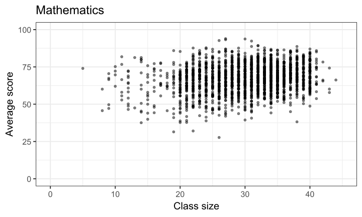
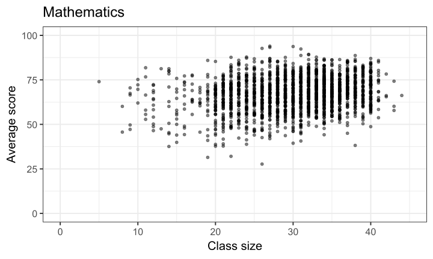
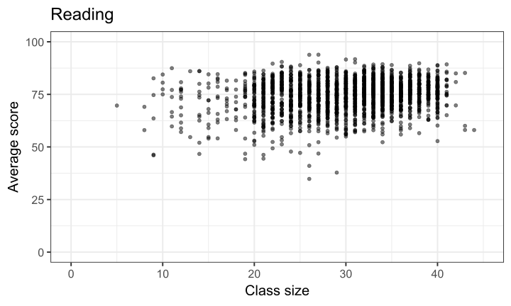
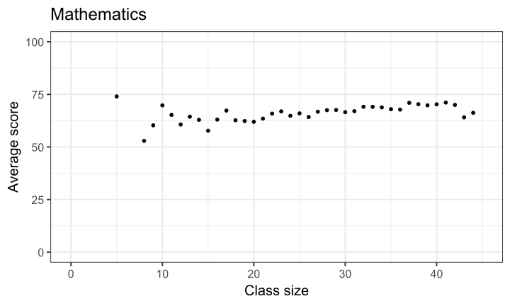
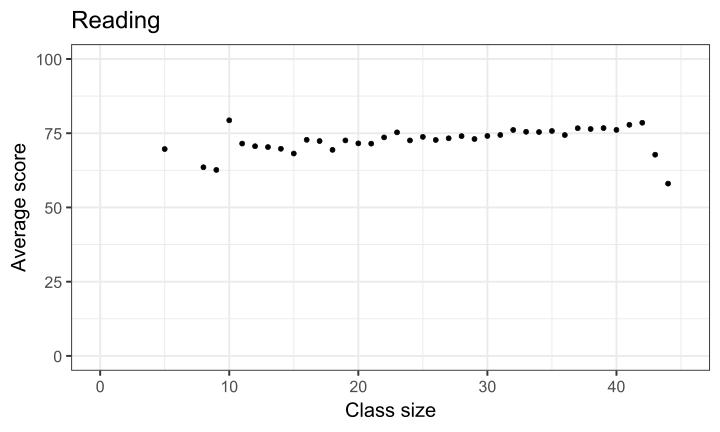
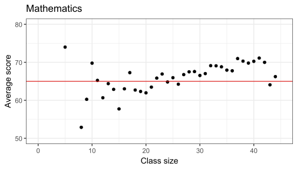
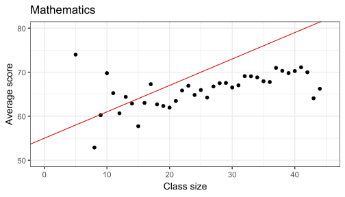
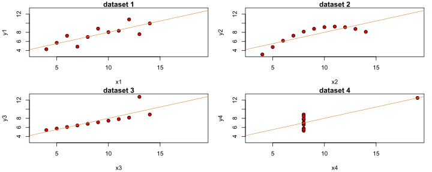
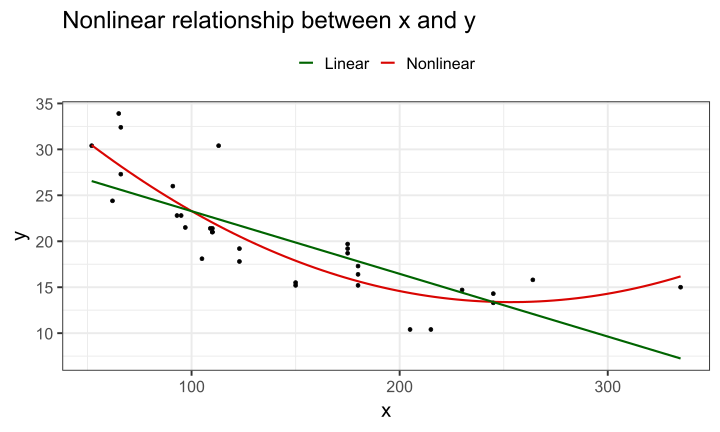

Simple Linear Regression
단순 선형 회귀 모형(Simple Linear Regression Model) 및 최소제곱법(Ordinary Least Squares, OLS) 추정 소개.
실증 분석: 학급 규모와 학생 성취도의 관계
인과적(causal) 관계를 어떻게 밝힐 수 있을까?
어떤 정책이 학생 학습 성취도 향상시키는가?
학급 규모 축소는 수십 년간 교육 정책 논쟁의 핵심 주제였음.
Joshua Angrist와 Victor Lavy (1999)의 유명한 연구에서 사용된 데이터 분석. 해당 데이터는 Raj Chetty와 Greg Bruich의 강의에서 제공됨.
1991년 이스라엘 유대인 공립 초등학교 5학년생(10-11세)의 시험 점수와 학급/학교 특성 포함.
국가 단위 시험을 통해 수학 및 (히브리어) 읽기 능력 평가했으며, 원점수는 1-100 사이 척도로 변환됨.
07:00 데이터를 여기에서 불러와 grades로 저장.
힌트: haven 라이브러리의 read_dta 함수 사용해서 .dta 형식의 파일 불러오면 됨.
(참고: .dta는 Stata에서 사용하는 데이터 파일 확장자임.)
데이터셋 설명:
avgmath와 avgverb는 뭘 의미하는지?skimr 패키지의 skim 함수 사용해서 classize, avgmath, avgverb 변수에 대한 기본적인 요약 통계 확인함.dplyr의 select 사용해서 변수 선택한 후 %>%로 skim() 적용하면 됨.)학급 규모와 학생 성취도 간 실제 (선형) 관계에 대해 어떤 관계가 있을 것이라 생각하는가?
학급 규모와 수학/언어 점수 간 상관관계는?




학급 규모와 학생 성취도의 관계를 시각적으로 요약하는 방법: 산점도를 통과하는 선(Line)


지금까지 분석을 좀 더 공식적으로 정리하자면
두 변수 간의 관계에 관심 있음:
결과변수 (종속변수, dependent variable): average mathematics score \((y)\)
설명변수 (독립변수, independent variable): class size \((x)\)
각 학급 \(i\)에 대해 \(x_i\)와 \(y_i\)를 관측할 수 있음.
따라서 학급 규모와 평균 수학 점수의 결합 분포(joint distribution)를 시각화할 수 있음.
현재 이 관계를 선(line) 하나로 요약하고 있음.
절편 \(b_0\)와 기울기 \(b_1\)을 갖는 선의 방정식은 다음과 같음:
\[ \widehat{y}_i = b_0 + b_1 x_i \]
만약 모든 데이터가 직선 위에 있다면, \(\widehat{y}_i = y_i\).
대부분의 경우 종속변수 \((y)\)는 우리가 선택한 독립변수 \((x)\)들에 의해서만 설명되지 않음, \(\widehat{y}_i \neq y_i\), 즉 “오차(error)”가 항상 발생. 이 오차를 잔차(residual)라 부름.
\((x_i,y_i)\)에서의 잔차를 \(e_i\)로 표시.
실제 데이터 \((x_i, y_i)\)는 따라서 예측값 + 잔차로 표현될 수 있음
\[ y_i = \widehat y_i + e_i = b_0 + b_1 x_i + e_i \]
무엇을 “최소화”하는 직선을 구해야할까?
오차(error)의 부호 \((+/-)\)가 서로 상쇄. 제곱 잔차(squared residuals)를 고려 \[\forall i \in [1,N], e_i^2 = (y_i - \widehat y_i)^2 = (y_i - b_0 - b_1 x_i)^2\]
\(\sum_{i = 1}^N e_1^2 + \dots + e_N^2\) 값이 최소화하는 \((b_0, b_1)\) 값을 선택.
오차(error)의 부호 \((+/-)\)가 서로 상쇄. 제곱 잔차(squared residuals)를 고려 \[\forall i \in [1,N], e_i^2 = (y_i - \widehat y_i)^2 = (y_i - b_0 - b_1 x_i)^2\]
\(\sum_{i = 1}^N e_1^2 + \dots + e_N^2\) 값이 최소화하는 \((b_0, b_1)\) 값을 선택.
OLS: 잔차 제곱합(squared residuals)을 최소화하는 추정 방법.
그렇다면, 절편 \(b_0\)와 기울기 \(b_1\)의 공식은?
하나의 독립변수만 있는 경우:
기울기 (Slope): \(b_1^{OLS} = \frac{cov(x,y)}{var(x)}\)
절편 (Intercept):\(b_0^{OLS} = \bar{y} - b_1\bar{x}\)
종속 변수 \((y)\)와 독립 변수 \((x)\)가 숫자형(numeric)이라고 가정
절편 \((b_0)\): \(x = 0\)일 때 예측된 \(y\) 값 \((\widehat{y})\).
기울기 \((b_1)\): \(x\)가 한 단위 증가할 때, \(y\) 값이 평균적으로 변하는 정도
두 변수 간 “관련이 있음(associated)”이라는 표현을 사용함.
즉, \(b_1\)을 \(x\)의 \(y\)에 대한 인과적 영향(causal impact)으로 해석하면 안 됨.
이를 주장하려면 특정 조건이 충족되어야 함.
또한 \(x\)의 단위(unit)에 따라 \(b_1\)의 해석과 크기(magnitude)가 달라질 수 있음.
\(x\)의 단위가 무엇인지 명확히 해야 함
Rlm함수를 사용하여 추정가능학급 규모와 학생 성적
Call:
lm(formula = avgmath_cs ~ classize, data = grades_avg_cs)
Coefficients:
(Intercept) classize
61.1092 0.1913 이 결과가 의미하는 것 (\(_i\) 첨자 생략):
\[ \begin{aligned} \widehat y &= b_0 + b_1 x \\ \widehat {\text{average math score}} &= b_0 + b_1 \cdot \text{class size} \\ \widehat {\text{average math score}} &= 61.11 + 0.19 \cdot \text{class size} \end{aligned} \]
학생 수가 26명일 때 예상되는 평균 성적은?
\[ \begin{aligned} \widehat {\text{average math score}} &= 61.11 + 0.19 \cdot 26 \\ \widehat {\text{average math score}} &= 66.08 \end{aligned} \]
05:00 다음 코드를 실행하여 데이터를 학급 규모(class size) 수준에서 집계:
R평균 언어 점수(종속 변수)를 학급 규모(독립 변수)에 대해 회귀분석(regress) 수행. 회귀 계수(coefficients)를 해석할 것
이전 회귀분석에서 OLS 계수 \(b_0\) 및 \(b_1\)을 직접 계산 (공식 이용). (힌트: cov, var, mean 함수 사용.)
학급 규모가 0일 때, 예측된 평균 언어 점수는 얼마인가? (이 값이 실제로 의미가 있는가?
학급 규모가 30명일 때, 예측된 평균 언어 점수는 얼마인가?
\(\widehat{y}_i\)의 평균은 \(\bar{y}\)와 같음 \[\begin{align} \frac{1}{N} \sum_{i=1}^N \widehat{y}_i &= \frac{1}{N} \sum_{i=1}^N b_0 + b_1 x_i \\ &= b_0 + b_1 \bar{x} = \bar{y} \end{align}\]
잔차(residuals)의 평균(또는 합)은 0. \[\begin{align} \frac{1}{N} \sum_{i=1}^N e_i &= \frac{1}{N} \sum_{i=1}^N (y_i - \widehat y_i) \\ &= \bar{y} - \frac{1}{N} \sum_{i=1}^N \widehat{y}_i \\\ &= 0 \end{align}\]
설명 변수(regressor)와 잔차는 정의상 서로 상관이 없음.
\[Cov(x_i, e_i) = 0\]
예측값과 잔차는 상관이 없음.
\[\begin{align} Cov(\widehat y_i, e_i) &= Cov(b_0 + b_1x_i, e_i) \\ &= b_1Cov(x_i,e_i) \\ &= 0 \end{align}\]
이는 \(Cov(a + bx, y) = bCov(x,y)\)라는 성질 때문.
공분산(covariance), 상관계수(correlation), 그리고 단순 OLS 회귀는 두 변수 간 선형 관계(linear relationships)만 측정한다는 점을 기억해야 함.
서로 완전히 동일한 상관계수 및 회귀선을 갖는 두 개의 데이터셋이 완전히 다르게 보일 수도 있음.

| dataset | cov | var(y) | var(x) |
|---|---|---|---|
| 1 | 5.501 | 4.127 | 11 |
| 2 | 5.500 | 4.128 | 11 |
| 3 | 5.497 | 4.123 | 11 |
| 4 | 5.499 | 4.123 | 11 |
회귀 분석에서 비선형 관계를 반영할 수 있음.
방법: 고차항(higher order term)을 추가하면 됨.
\[
y_i = b_0 + b_1 x_i + b_2 x_i^2 + e_i
\]
이는 다중 회귀(multiple regression)의 한 형태임.

다음 관계를 기억할 것:
\[
y_i = \widehat{y}_i + e_i
\]
이를 기반으로 다음과 같은 분산 분해(variance decomposition)를 얻음: \[\begin{align} Var(y) &= Var(\widehat{y} + e)\\ &= Var(\widehat{y}) + Var(e) + 2 Cov(\widehat{y},e)\\ &= Var(\widehat{y}) + Var(e) \end{align}\]
이유는 다음과 같음:
총 변동 (SST) = 모델이 설명한 변동 (SSE) + 설명되지 않은 변동 (SSR)
\[ R^2 = \frac{\text{variance explained}}{\text{total variance}} = \frac{SSE}{SST} = 1 - \frac{SSR}{SST}\in[0,1] \]
* $R^2$ 값이 **1에 가까울수록**, 모델의 **설명력(explanatory power)**이 ***매우 높음***을 의미함.
* $R^2$ 값이 **0에 가까울수록**, 모델의 **설명력**이 ***매우 낮음***을 의미함.
* 예를 들어, $R^2 = 0.5$이면, **$x$의 변화가 $y$의 변화 중 50%를 설명함**을 의미함.낮은 \(R^2\) 값이 무조건 모델이 쓸모없다는 뜻은 아님! 예측(predictive power)보다는 인과적 메커니즘(causal mechanisms)에 더 초점을 맞추는 경우가 많음.
\(R^2\) 값은 인과 관계(causal relationship)를 나타내는 지표가 아님! 회귀 모델에서 높은 \(R^2\) 값이 있다고 해서, \(x\)가 \(y\)를 인과적으로 설명한다고 볼 수 없음!
10:00 avgmath_cs를 classize에 대해 회귀(regress)하고 결과를 math_reg 객체에 저장.
summary(math_reg)를 실행하여 (다중) \(R^2\) 값을 확인함. 이 값의 의미를 해석할 것.
classize와 avgmath_cs 간 상관계수(correlation)를 제곱하여 계산. 이 값은 단일 설명변수(one regressor)를 가진 회귀에서 \(R^2\)와 상관계수 간의 관계를 보여줌.
1번과 2번을 avgverb_cs에 대해 반복함.
어떤 시험에서 학급 규모의 분산이 학생 점수의 분산을 더 많이 설명하는지 비교함.
(Optional) broom 패키지를 설치 및 로드한 후, math_reg를 augment() 함수에 전달하여 새로운 객체에 저장함.
avgmath_cs의 분산(SST)과 예측값 .fitted의 분산(SSE)을 사용하여 \(R^2\) 값을 직접 계산함. (이전 슬라이드의 공식을 참고할 것.)